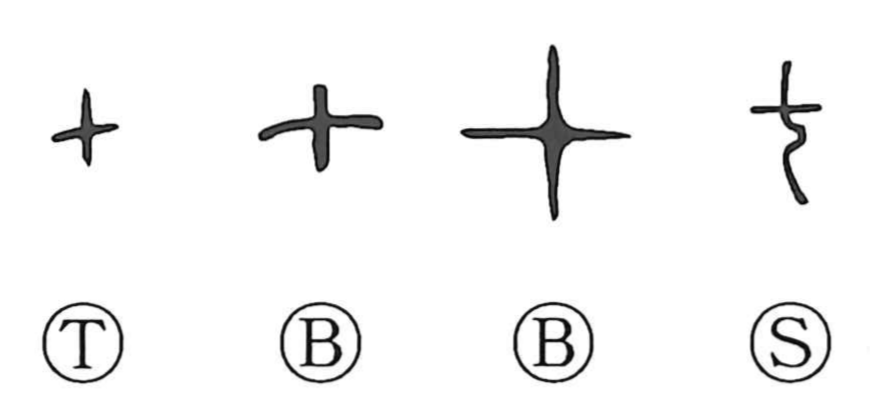

七

Kun: nanatsu, nana, nano | On: shichi
seven
Explanation
七 originally appears to represent a cut bone, possibly the joint of a knee. Its early cross-like outline has a shorter vertical stroke than the sign for ten. Adding 刀, a knife, produces 切, the act of cutting the bone.
The use for the number seven is a sound loan. The bone sign was borrowed to write the numerical word; its strokes do not enumerate seven objects. Later substitutions such as 漆 in formal numerical writing likewise depend on sound.
Seven acquired a sacred character. Literary forms named 七, including the ‘Seven Stimuli’ and ‘Seven Revelations,’ may preserve something of ritual or incantatory recitation. That proposed cultural connection is a later development of the numeral, separate from the original bone shape.